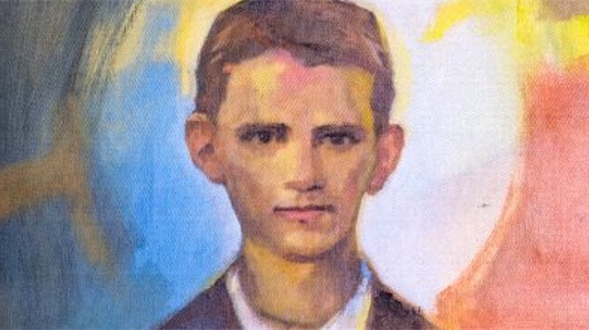
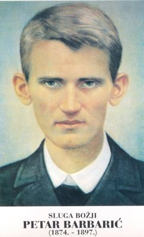

Sluge Božji
Isusovački novak · Sjemeništarac
Časni sluga Božji Petar Barbarić
1874. – 1897.
Hercegovački sjemeništarac u Travniku isticao se vjernošću svakodnevnim dužnostima, molitvom i brigom za druge. Pred smrt položio je zavjete u Družbi Isusovoj.

Izvor slike


Izvor slike
- Spomendan
- 15. travnja
- Zaštitništvo
- Nije navedeno u izvoru
- Životni vijek
- 1874. – 1897.
- Djelovanje
- Mladi i odgoj · Euharistija i pobožnosti · Svakodnevni rad i skrovita služba · Bolest i osobne kušnje
- Razdoblje
- 19. stoljeće
- Crkveni naslov
- Časni sluga Božji
- Rođenje
- 19. svibnja 1874., Šiljevišta, župa Klobuk
- Smrt
- 15. travnja 1897., Travnik
- Priznanje herojskih kreposti
- 18. ožujka 2015., papa Franjo
- Počivalište
- Sjemenišna crkva sv. Alojzija, Travnik
U kalendaru zbirke naveden je dan smrti.
Životopis
Petar Barbarić rođen je 19. svibnja 1874. u Šiljevištima, u hercegovačkoj župi Klobuk, kao dijete Ante i Kate, rođene Tolj. Obitelj s devetero djece živjela je skromno, uz rad, zajedničku molitvu i nedjeljnu misu. Pismeni roditelji bili su mu prvi učitelji; njegov stariji brat Marko postao je franjevac. Petar je zavolio katekizam i druge poučne knjige te ih nosio i dok je čuvao stoku.
Kad se 1886. otvorila škola u Veljacima, do nje je svakodnevno pješačio preko brda i potoka. Četiri je razreda završio u dvije godine. Poslije je kao trgovački pomoćnik radio u Vitini, premda je želio nastaviti učiti. Učitelj Tomislav Vuksan preporučio ga je travničkom sjemeništu, pa je 1889. s očevim pristankom započeo novo školovanje. U gimnaziji se isticao marljivošću, pristupačnošću i spremnošću pomoći drugovima.
Marijina kongregacija i pobožnost Srcu Isusovu oblikovale su njegov apostolat među vršnjacima. Molio je i dijelio krunice, a od petoga razreda vodio kongregaciju. Svetost nije povezivao s izvanrednim uspjesima, nego s vjernim izvršavanjem običnih dužnosti. Želja za Družbom Isusovom sazrela je tijekom školovanja, no odgojitelji su preporučili da pričeka maturu.
Plućna tuberkuloza prekinula je taj plan. U dugoj je bolesti strpljivo prihvaćao nemoć i pisao obitelji s pouzdanjem u Boga. Posebnim dopuštenjem položio je redovničke zavjete dva dana prije smrti na Veliki četvrtak, 15. travnja 1897. Pokopan je na Bojni, a 1935. prenesen u sjemenišnu crkvu. Njegov glas svetosti prelazio je vjerske granice, a životopis odgojitelja Antuna Puntigama širio njegovo poznavanje. Papa Franjo odobrio je 18. ožujka 2015. dekret o herojskim krepostima; ostaje časni sluga Božji.
Život i nasljeđe
Barbarićevo sudjelovanje u Marijinoj kongregaciji uključivalo je i preuzimanje odgovornosti među učenicima. Njegova se pobožnost razvijala unutar škole, s redovitim obvezama učenja i zajedničkoga života. Prije sjemeništa radio je kao trgovački pomoćnik, pa izbor svećeničkoga puta nije započeo izvan iskustva svakodnevnoga rada. Kasnije štovanje u Travniku čuva uspomenu na učenika koji nije dočekao svećeništvo. Priznanje herojskih kreposti i naziv časnoga sluge Božjega različiti su od beatifikacije, koju se ne smije pretpostaviti iz same raširenosti pobožnosti.
Pročitaj više na izvornoj stranici ↗